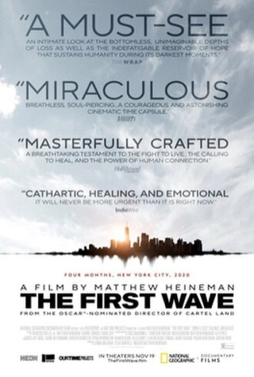

About the film

A once-in-a-century pandemic has engulfed our world, leaving in its wake a devastating trail of death and despair, while also exposing long-standing fault lines in our society and changing the very fabric of our daily lives. The “first wave” of COVID-19 ravaged the city of New York from March through June 2020. Through Matthew Heineman’s signature approach of character-driven cinema vérité,
The First Wave
documents those harrowing four months, embedding with a group of brave healthcare workers at Long Island Jewish Medical Center in Queens, as they risked their lives in the epic battle to keep the virus at bay.
With poignancy and intimacy, the film unflinchingly bears witness to the rarely seen reality of a hospital overwhelmed by COVID — the emotional and psychological toll on the medical professionals, the patients fighting for their lives and the families waiting, hoping for them to come home. As the COVID-19 crisis intensifies, further exposing the deep inequities of race and class through our nation, Heineman weaves together several distinct storylines, revealing layers of complexity both inside and outside the hospital.
Matthew Heineman
At the festival
More films on these topics
 Cartel LandMatthew Heineman2015 · 100 min
Cartel LandMatthew Heineman2015 · 100 min RescueSine Plambech2026 · 90 min
RescueSine Plambech2026 · 90 min The Drug in Our PocketAnnie Sundberg2026 · 77 min
The Drug in Our PocketAnnie Sundberg2026 · 77 min- Short Strand: Close to HomeMarie-Josée Desharnais, Alexandra Catherine Genova, Arjun Fischer2026
 Listen to MeStephanie Etienne, Kanika Harris2025 · 77 min
Listen to MeStephanie Etienne, Kanika Harris2025 · 77 min The Six Billion Dollar ManEugene Jarecki2025 · 126 min
The Six Billion Dollar ManEugene Jarecki2025 · 126 min